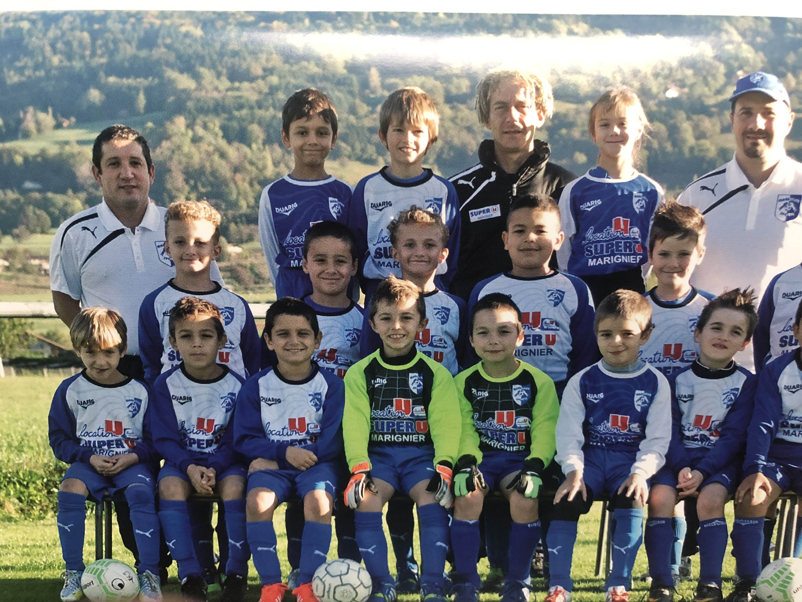
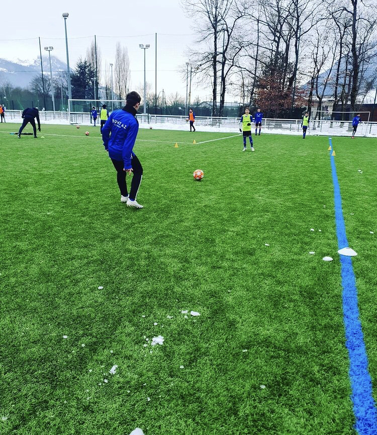

Centres d'intérêts
Sports
Depuis mon plus jeune âge, je pratique différents sports de manière régulière. Tout a commencé par le football dès l'âge de 5 ans jusqu'à 17 ans. J'ai eu l'occasion de faire partie de l'équipe du département et de jouer au meilleur niveau jeune de France contre les meilleures équipes de la région.   J'ai aussi pratiqué d'autres types de sports entre-temps tels que le ski, la course à pied, la marche, le vélo ... L'année dernière, j'ai aussi eu la chance de découvrir les sports de combat avec la lutte, ce fut une expérience très enrichissante qui m'a permis de voir le monde de manière différente.
Informatique
Depuis le début du lycée, j'avais déjà une idée de la branche de travail
vers laquelle je voulais m'orienter. J'ai toujours eu une sorte de passion ou d'obsession pour l'informatique,
notre futur sera fait de nouvelles technologies qui ne cessent de progresser vers demain.
C'est pourquoi je me suis dirigé vers la formation R&T, qui touche à de nombreux domaines
qui, dans le futur, seront tous autant importants les uns que les autres, entre les différents
langages de programmation, le réseau, la cybersécurité, la télécommunication, et j'en passe.
Cette formation était pour moi le meilleur moyen de me diriger vers un futur où beaucoup
de choix s'offriront à moi.